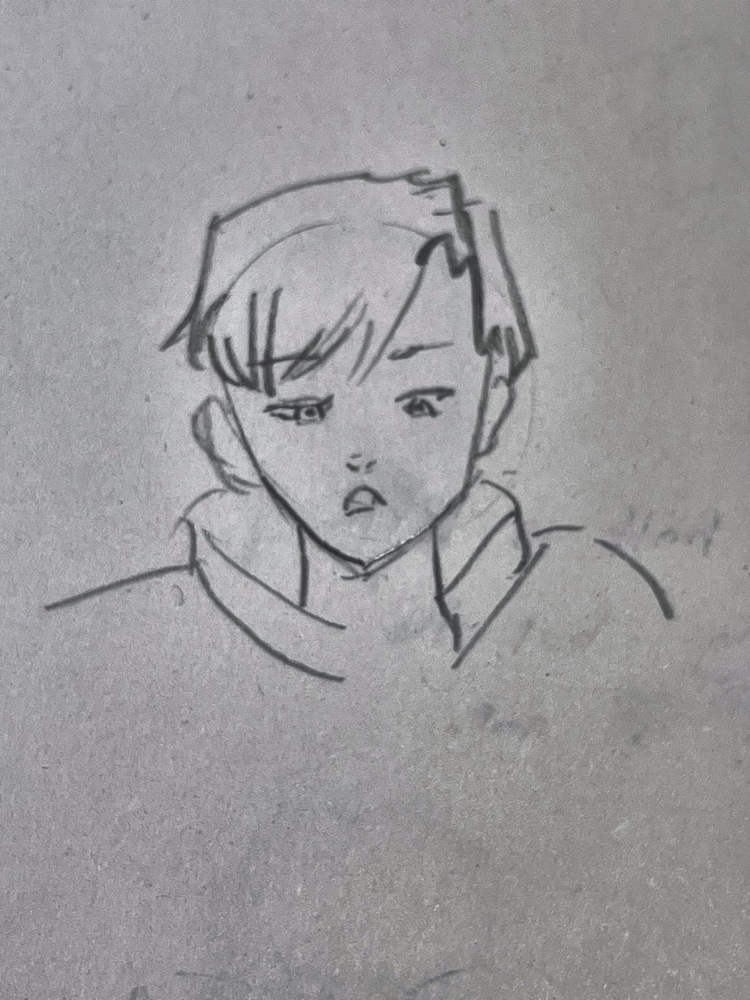

v1

-
1
Eyes too small and narrow, so they read as too far apart
In the reference the eyes are big, wide almond shapes, each almost as wide as the gap between them. In the drawing they are narrow, so the gap is about 1.5 eye-widths (reference: about 1.2). Keep each eye's centre where it is and widen each eye by roughly a quarter: stretch the left eye toward the nose and the right eye toward the nose and the outer edge of the face. Make each eye slightly taller and thicken the upper lid line to match the reference.
-
2
Nose and mouth placed too high in the face
Measured from the top of the head (0) to the chin (1), the drawing's nose base is at 0.63 vs 0.69 in the reference, and the mouth is at 0.77 vs 0.81. Move the bottom of the nose down by about one eye-height and move the mouth down slightly less, so it sits about halfway between the nose and the chin. This lengthens the eye-to-nose section, which is currently too short, and shortens the area below the mouth.
Critique by claude-opus-5-5 · lessons ad7383e